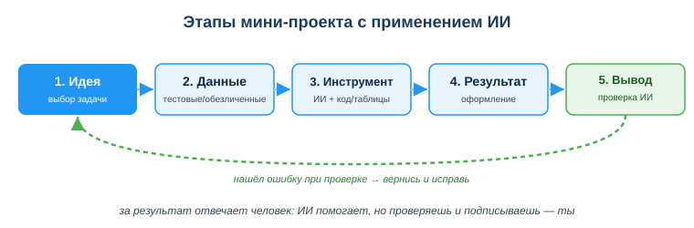
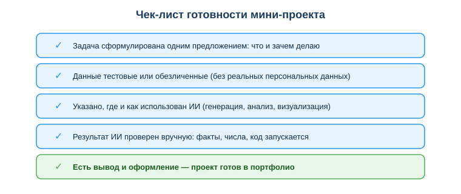

Расширенный учебный материал по теме
Дисциплина: Применение информационно-коммуникационных и цифровых технологий
Результат обучения: РО 2.3 — применение ИИ и обработки данных · Объём темы: 2 часа
Квалификация: 4S06130103 «Разработчик программного обеспечения»
Представь обычную ситуацию на стажировке. Тебе дают не «учебное задание», а маленький кусок настоящей работы: «у нас есть выгрузка заказов за месяц — посчитай, в какие дни покупают чаще, и покажи это наглядно к завтрашнему утру». Никто не диктует, какой синтаксис применить и какую функцию вызвать. Тебе дали задачу и срок — остальное твоё.
Год назад ты бы делал это вручную: открыл бы таблицу, вручную пересчитал строки, нарисовал график на глаз — и потратил бы половину дня. Сейчас у тебя в руках совсем другой набор: Python и Pandas для обработки данных, библиотеки визуализации для графиков, электронные таблицы для быстрых сводок, инструменты автоматизации и ИИ-ассистент, который пишет черновик кода за секунды. Казалось бы, всё просто. Но вот что важно понять сразу: сами по себе эти инструменты задачу не решают. ИИ напишет код, который запустится, — но не тот, что нужен. Pandas посчитает — но не то, что ты имел в виду. График построится — но покажет не тот показатель.
Решает задачу не инструмент, а ты — тем, как ты её ставишь, какие данные готовишь, что просишь у ИИ, как проверяешь результат и какой вывод делаешь. Именно об этом тема: как взять реальную задачу и довести её до конца — от идеи до проверенного результата, применяя инструменты курса вместе с ИИ ответственно.
Мини-проект — это твой первый маленький «продукт». Не упражнение «реши пример», а законченное дело: «вот задача, вот данные, вот как я её решил, вот где помог ИИ, вот что получилось и как я это проверил». И вот почему это лично тебе важно. На собеседовании работодатель почти не смотрит на оценки. Он смотрит на то, что ты умеешь сделать сам и можешь показать. Готовый мини-проект — это запись в портфолио и предмет разговора на собеседовании: ты показываешь не диплом, а работу. А умение честно сказать, где тебе помог ИИ и как ты проверил его вклад, ценится отдельно — это признак зрелого специалиста, а не того, кто слепо копирует ответы [4].
Эта тема собирает воедино всё, чему ты учился в блоке РО 2.3: Python и Pandas (темы 29–30), визуализацию данных (тема 31), интерпретацию данных с ИИ (тема 32), ИИ-ассистентов и промпт-инжиниринг (темы 26–27), автоматизацию (темы 34–35) и критическую оценку результата ИИ (тема 36). Отдельные кирпичи превращаются в умение только тогда, когда ты складываешь из них что-то целое ради конкретного результата. Мини-проект — тренировка этого навыка на маленьком, посильном масштабе.
После изучения темы ты сможешь:
Это ядро темы. Здесь подробно разобрано, как выполнить мини-проект от начала до конца. Сначала — общая логика пяти этапов (схема в приложении А), затем каждый этап отдельно: что на нём делать, какие ошибки подстерегают, какой инструмент применить. После этого — как оформить результат, как обеспечить ответственность и обезличивание, и наконец — чек-лист готовности (приложение Б).
Главное понятие темы стоит понять точно:
Разница принципиальная. Упражнение проверяет один навык: «напиши цикл», «построй график по готовым данным», «вызови функцию». Мини-проект проверяет умение связать навыки вместе ради результата. Ты сам ставишь задачу, сам решаешь, какие данные нужны, сам выбираешь инструмент, сам проверяешь и сам делаешь вывод. Именно так выглядит настоящая работа: никто не разбивает её на готовые шаги — это делаешь ты.
Удобная аналогия. Учить отдельные навыки — это как тренировать удары по мячу, отрабатывать пас, бегать кросс. А мини-проект — это первая настоящая игра: всё, что ты тренировал по отдельности, нужно применить вместе, в одной ситуации, ради одного результата — забить гол. Можно прекрасно бить по мячу на тренировке и растеряться в игре. Поэтому мини-проект ценен: он переводит знания в умение.
И ещё одно, что должно остаться с тобой после темы: ИИ в мини-проекте — помощник, а не автор. Он ускоряет шаги: пишет черновик кода, подсказывает формулу, предлагает тип диаграммы. Но идею, выбор данных, проверку и вывод делаешь ты. Проект остаётся твоим, и подпись под ним — тоже твоя. Эту мысль наглядно закрепляет нижняя надпись на схеме этапов (приложение А): «за результат отвечает человек: ИИ помогает, но проверяешь и подписываешь — ты».
Любой мини-проект, большой он или маленький, проходит одни и те же пять этапов. Посмотри на схему «Этапы мини-проекта с применением ИИ» (приложение А). Читается она слева направо: пять прямоугольников соединены синими стрелками — это прямой ход работы. Первый блок («Идея») закрашен синим — это старт. Последний блок («Вывод») выделен зелёным — это контрольная точка, финиш. А под цепочкой идёт зелёная пунктирная стрелка, которая возвращает от вывода назад, к началу, с подписью «нашёл ошибку при проверке → вернись и исправь». Это самая важная деталь схемы: мини-проект не всегда движется по прямой. Если на проверке (этап 5) ты нашёл ошибку, ты возвращаешься на нужный этап и переделываешь. Это нормально и правильно — так работает любой настоящий проект.

Вот пять этапов кратко, а дальше разберём каждый подробно:
Запомни логику этих этапов как единое целое: сначала думаешь (1–2), потом делаешь (3–4), потом проверяешь и осмысляешь (5). Самая частая ошибка новичка — прыгнуть сразу на этап 3 («дай-ка я попрошу ИИ написать код») и пропустить постановку и подготовку данных. Тогда ИИ решает не ту задачу не на тех данных, и весь проект приходится переделывать.
Этот этап решает судьбу всего проекта. Если задача выбрана плохо, никакой инструмент не спасёт.
Сформулируй задачу одним предложением. Хорошая формулировка отвечает на два вопроса: что ты делаешь и зачем. Пример хорошей формулировки: «По обезличенной таблице расходов за месяц построить график по категориям, чтобы увидеть, на что уходит больше всего». Здесь есть и действие («построить график по категориям»), и цель («увидеть, на что уходит больше всего»). Пример плохой формулировки: «Сделать что-нибудь с данными про расходы» — нет ни конкретного действия, ни цели, и непонятно, когда задача будет считаться выполненной.
Выбирай задачу по силам. Это ключевое слово темы — посильная задача. Признаки хорошей мини-задачи:
Признаки того, что задача слишком велика (её надо сузить): нужно несколько источников данных; нужен сайт или приложение, а не скрипт; результат нельзя описать одной фразой; ты сам не понимаешь, с чего начать. Если задача великовата — отрежь от неё маленький кусок. Вместо «проанализировать продажи магазина за год» возьми «посчитать суммы заказов по дням недели за один месяц». Маленький законченный проект всегда лучше большого незаконченного.
Где взять идею. Бери задачу из учёбы, подработки или быта, где есть числа: расходы за месяц, оценки группы, расписание, посещаемость, температура за неделю, список заказов. Хорошая мини-задача почти всегда звучит как «посчитать…», «сравнить…», «показать на графике…», «составить сводку…». Посмотри на таблицу типов задач в разделе 4.6 — она прямо подсказывает, какие задачи бывают и каким инструментом их брать.
Без данных нет проекта. Но к данным есть строгое требование: они должны быть тестовыми или обезличенными. Реальные персональные данные (настоящие ФИО, ИИН, телефоны, адреса) использовать нельзя — и потому что это закон РК (об этом подробно в разделе 4.9), и потому что ИИ-сервисы часто работают на внешних серверах, куда передавать чужие данные недопустимо [3].
Два пути подготовить данные.
Путь 1 — тестовые (выдуманные) данные. Ты сам придумываешь небольшой набор. Это самый безопасный путь для учебного проекта: данных, которые могли бы кого-то опознать, просто нет. Например, для задачи «расходы по категориям» ты создаёшь таблицу из 15–20 строк с категориями (еда, транспорт, связь) и суммами — все цифры выдуманы. Можно даже попросить ИИ: «сгенерируй тестовую таблицу из 20 строк: дата, категория расхода, сумма» — это безопасно, потому что данные изначально ненастоящие.
Путь 2 — обезличивание реального набора. Если у тебя есть реальная выгрузка (например, заказы), приведи её к виду, по которому нельзя опознать человека:
Вот как выглядит обезличивание одной строки «до» и «после» — для задачи «посчитать заказы по дням»:
| Поле | Реальные данные (нельзя отдавать ИИ) | Обезличенные (можно) |
|---|---|---|
| Имя клиента | Алия Сериковна Ж. | Клиент 1 |
| Телефон | +7 701 234 56 78 | — (удалено) |
| Дата заказа | 2025-09-12 | 2025-09-12 |
| Сумма | 14 500 ₸ | 14 500 ₸ |
После обезличивания для задачи осталось ровно то, что нужно (дата, сумма), а опознать человека уже нельзя. Это принцип дата-минимизации — отдавать только необходимый минимум.
Простой формат данных. Для мини-проекта удобнее всего таблица в формате CSV (значения через запятую) или обычная таблица в электронных таблицах. Не усложняй: 15–30 строк и 2–4 столбца достаточно, чтобы показать решение. Большие наборы оставь на потом.
Проверь данные перед работой. Прежде чем отдавать их инструменту, бегло посмотри: нет ли пустых ячеек, одинаково ли записаны категории («Еда» и «еда» — это для программы разные категории!), в одном ли формате даты. Грязные данные — частая причина того, что «код правильный, а результат странный».
Теперь, когда задача поставлена, а данные готовы, выбираешь инструмент. Главный принцип: инструмент подбирается под тип задачи, а не наоборот. Не «я знаю Pandas, найду, куда его applied», а «у меня вот такая задача — каким инструментом её удобнее взять».
Вот карта соответствия типов задач и инструментов курса (она же есть в уроке):
| Тип задачи | Инструмент курса + роль ИИ |
|---|---|
| Обработка данных (посчитать, отфильтровать, сгруппировать) | Python + Pandas; ИИ помогает написать код [1; 5] |
| Подсчёты и сводки (суммы, средние, проценты) | электронные таблицы; ИИ подсказывает формулы |
| Наглядное представление | визуализация — графики (Matplotlib); ИИ предлагает тип диаграммы [2] |
| Повторяющиеся действия | автоматизация (скрипт); ИИ генерирует заготовку |
| Текст и пояснения (инструкция, FAQ) | ИИ-ассистент; ты проверяешь и редактируешь |
Как именно подключается ИИ. Здесь работает всё, чему ты учился в промпт-инжиниринге (тема 27). Чтобы ИИ дал полезный результат, запрос должен быть конкретным. Сравни два запроса для одной задачи:
date, sum. Напиши код на Python с Pandas: посчитай количество заказов по дням недели и выведи результат таблицей. Поясни каждую строку». Здесь ИИ знает данные, инструмент и формат результата — и ответ будет по делу.Хороший запрос к ИИ для кода обычно содержит: какие данные на входе (столбцы и их смысл), что нужно получить (результат), каким инструментом (Python/Pandas, формула таблицы), в каком виде (таблица, график, число) и просьбу пояснить код — чтобы ты понял логику, а не вставлял вслепую.
Важно: ИИ пишет черновик, а не финал. Полученный код или формулу ты обязательно читаешь и понимаешь, прежде чем запускать. Если не понимаешь, как работает строка, — спроси ИИ объяснить её или найди функцию в документации (Pandas, Matplotlib, Python — ссылки в разделе 11). Код, который ты не понимаешь, ты не сможешь починить, когда он сломается, — а отвечать за результат всё равно тебе.
Результат мини-проекта — это не «строчка в консоли», которую видел только ты. Это оформленный итог, который можно показать другому человеку и положить в портфолио. Формат зависит от типа задачи:
Минимальная структура отчёта мини-проекта (это твой шаблон, применяй для любого варианта):
Про оформление графика. Если результат — диаграмма, сделай её читаемой: подпиши оси, дай заголовок, выбери правильный тип. Для «заказы по дням недели» подходит столбчатая диаграмма (сравнение категорий), для «температура за неделю» — линейная (изменение во времени), для «доли расходов» — круговая. ИИ может предложить тип диаграммы, но решаешь ты: спроси себя, что именно ты хочешь показать — сравнение, изменение или доли.
Хорошее правило: оформляй так, чтобы человек, который не видел твоих данных, понял результат за минуту по заголовку, подписям и одной фразе вывода.
Это контрольная точка проекта (зелёный блок на схеме, приложение А). Здесь две части: сделать вывод и проверить результат.
Вывод — это ответ на вопрос «зачем» из постановки задачи, сформулированный по результату. Не «я построил график», а «пик заказов приходится на пятницу и субботу» или «больше всего уходит на еду — почти половина расходов». Вывод должен опираться на цифры, которые ты получил, и быть понятным человеку, который не видел кода.
Проверка результата ИИ — здесь сосредоточена главная ответственность мини-проекта. ИИ может выдать код с ошибкой, перепутать столбцы, придумать несуществующие данные или дать правдоподобный, но неверный вывод. Если не проверить — ошибка попадёт в результат, а отвечать за неё будешь ты, а не ИИ. Вот конкретные способы проверки:
Если ИИ дал код:
Если ИИ дал факт, цифру или текст:
Навык критической проверки результата ИИ — отдельная большая тема (занятие 36), но в мини-проекте ты применяешь его на практике. Главный принцип: ИИ помогает быстрее получить черновик, но подтверждение всегда берётся не у ИИ, а у проверки и надёжного источника [7].
И помни про возврат (пунктирная стрелка на схеме): нашёл на проверке ошибку — это не провал, а нормальный ход работы. Вернись на нужный этап (исправь данные, переформулируй запрос ИИ, поправь код) и пройди заново. Готовую сдают только проверенную работу.
За результат отвечает человек — это сквозной принцип всего курса и этой темы. Даже если код, текст или вывод сгенерировал ИИ, последствия (ошибка в работе, неверный вывод, утечка данных) наступают для тебя, а не для инструмента. ИИ нельзя «обвинить» — отвечает тот, кто применил результат [7].
Из этого следует практическое правило мини-проекта: в работе обязательно указывай, где и как использован ИИ. Это не «признание в списывании», а профессиональная честность — так делают и в настоящей разработке. Что именно отметить:
Образец строки для отчёта: «Код подсчёта по дням недели сгенерирован ИИ-ассистентом по моему запросу; я проверил результат вручную на трёх днях, исправил группировку по неверному столбцу и сформулировал вывод сам». Такая строка показывает преподавателю (и завтра — работодателю), что ты владеешь ситуацией, а не просто скопировал ответ. Именно это отличает «ИИ усиливает меня» от «ИИ решает за меня».
Требование использовать обезличенные данные — не каприз преподавателя, а норма закона. Обработку персональных данных в Казахстане регулирует Закон РК «О персональных данных и их защите» от 21.05.2013 № 94-V [3]. Персональными считаются не только ФИО, но и ИИН, номер телефона, адрес, фото, данные документов — любые сведения, по которым человека можно прямо или косвенно опознать.
Что это значит для мини-проекта на практике. Загрузить реальную выгрузку с ФИО, ИИН и телефонами клиентов в публичный ИИ-сервис — значит передать персональные данные посторонней стороне без оснований. Это утечка и нарушение закона, и отговорки «срочно» или «файл маленький» ничего не меняют. Поэтому в учебном проекте всегда:
Этот принцип ты переносишь и в будущую работу: прежде чем что-либо отдать внешнему сервису или ИИ, спроси себя — «нет ли здесь данных, по которым можно опознать человека?». Если есть — обезличь или не отправляй.
Перед тем как сдать работу, проверь её по чек-листу. Он изображён на схеме «Чек-лист готовности мини-проекта» (приложение Б): пять пунктов, последний — зелёный, означает «готово в портфолио». Пройдись по каждому пункту честно:

Если все пять пунктов выполнены — проект готов и его можно класть в портфолио. Если хоть один не выполнен — вернись и доделай (вспомни пунктирную стрелку возврата). Этот чек-лист — концентрат всей темы; держи его перед глазами, когда делаешь свой проект.
Пример 1 — мини-кейс «заказы по дням недели» (полный проход по этапам).
Идея: «По обезличенной выгрузке заказов показать, в какие дни недели покупают чаще, чтобы спланировать акции». Данные: берётся CSV без имён клиентов — только дата и сумма заказа (обезличено). Инструмент: студент просит ИИ-ассистента написать код на Pandas для подсчёта заказов по дням недели и построения столбчатой диаграммы; читает и понимает код. Результат: столбчатая диаграмма + строка вывода. Вывод и проверка: студент вручную пересчитывает заказы за два дня и сверяет с кодом, числа совпадают; вывод: «пик заказов — пятница и суббота». В отчёте отмечает: «код сгенерирован ИИ, проверен и исправлен мной».
Разбор: это образцовый мини-проект. Все пять этапов пройдены, данные обезличены, результат проверен вручную, вклад ИИ указан честно. Именно так выглядит работа, готовая в портфолио.
Пример 2 — типичная ошибка «сдал как есть».
Студент попросил ИИ написать код, получил ответ, который запустился и выдал число, и сразу сдал проект: «ИИ написал — значит, готово».
Разбор: пропущен этап 5 — проверка. ИИ сгруппировал данные не по тому столбцу, и число оказалось неверным. Виноват не ИИ, а человек, применивший результат без проверки. Правильно было сверить числа вручную хотя бы на нескольких строках (раздел 4.7). Запуск кода не равен правильности результата.
Пример 3 — нарушение приватности.
Студенту дали реальную выгрузку клиентов (ФИО, ИИН, телефоны), и он «для скорости» загрузил её целиком в публичный ИИ-сервис, чтобы тот посчитал средний чек.
Разбор: это нарушение Закона РК № 94-V [3] — передача персональных данных посторонней стороне. Для средней суммы имена и телефоны не нужны вообще. Правильно — обезличить (оставить только суммы) или взять тестовые данные (раздел 4.4, 4.9).
Основная и дополнительная литература:
Нормативные источники РК:
Электронные ресурсы и официальная документация:
Международные рамки:
assets/38_shema-etapy-proekta.svg. Читается слева направо: пять этапов (идея → данные → инструмент → результат → вывод), синие стрелки — прямой ход, зелёная пунктирная — возврат на исправление при ошибке. Внизу напоминание: за результат отвечает человек.assets/38_shema-cheklist-gotovnosti.svg. Пять пунктов проверки перед сдачей; последний (зелёный) — «есть вывод и оформление — проект готов в портфолио».Материал подготовлен на основе урока темы (urok.md) и источников раздела 11; он расширяет и углубляет содержание урока для самостоятельного изучения. Источники приведены главами и ссылками (без номеров страниц); нормативные акты — с реквизитами.
Материал разработан рабочей группой ТОО «Колледж Хекслет Казахстан» и одобрен к использованию в обучении решением Педагогического совета.